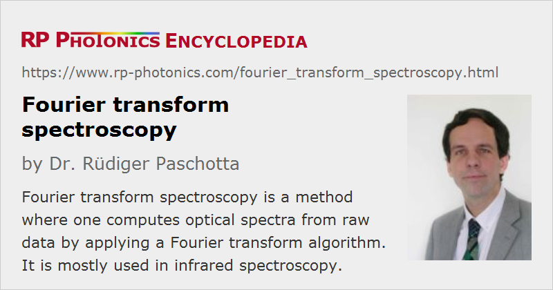

Fourier Transform Spectroscopy
Acronym: FTS
Definition: a method for spectroscopy rare an optical spectrum is computed from raw data with a Fourier transform
Alternative term: time domain spectroscopy
More general terms: optical spectroscopy
German: Fourier-Transform-Spectroskopie
Categories: light detection and characterization, optical metrology, methods
How to cite the article; suggest additional literature
Author: Dr. Rüdiger Paschotta
Fourier transform spectroscopy is a method where one computes an optical spectrum from raw data by applying a Fourier transform algorithm. The method is applied in various techniques for spectroscopy – most often in the context of infrared spectroscopy.
The term time domain spectroscopy is also common, because the measured interference signal is measured in the time domain e.g. in the sense that an optical time delay is varied.
Operation Principle
The operation principle of Fourier transform spectroscopy in its most common form is fairly simple to understand. The investigated electromagnetic radiation (most frequently, infrared light) is sent to an interferometer, normally in the form of a Michelson interferometer. One then measures the optical power at the output of the interferometer as a function of the arm length difference, using some photodetector. That arm length difference is usually manipulated by mechanically moving a mirror (or more conveniently a retroreflector) over some distance.
If the optical input to the interferometer were monochromatic, one would obtain a sinusoidal oscillation of the detected power as a function of arm length difference, and the period of that oscillation would be the optical wavelength. If the light is polychromatic, the recorded interferogram will be a superposition of contributions from the different wavelength components. Therefore, it is clear that by applying a Fourier transform to those data one can retrieve the optical spectrum – more precisely, the power spectral density as a function of optical frequency or wavelength. Information on the spectral phase is not obtained. Some corrections need to be applied to the obtained spectrum, as explained below.
For a mathematically founded understanding, consider that the interferogram signal, resulting from the superposition of two optical electric fields with a certain time delay can be expressed as follows:
where I(τ) can be the intensity of the interference signal or alternatively a photocurrent. That signal can be decomposed into a constant and a τ-dependent part; the latter is:
This is essentially just the autocorrelation of the electric field. According to the Wiener–Kinchine theorem, the Fourier transform of that is the intensity spectrum of the electric field, i.e., the optical spectrum.
The explained operation principle can easily be adapted for absorption spectroscopy. One can record an optical spectrum with and without a specimen inserted into the beam path – before or after the interferometer – and compare the computed spectral intensities to obtain the absorption of the sample in a wide range of wavelengths. More precisely, one obtains the loss of spectral intensity caused by the sample, which may not only be caused by absorption of the specimen but also by surface reflections, for example.
Note that there are also other, less common forms of Fourier transform spectroscopy. For example, terahertz waveforms can be recorded in the time domain with an optical sampling technique based on a photoconductive antenna (see the article on terahertz detectors). One can then apply a Fourier transform to obtain the optical spectrum of a terahertz pulse, in that case also obtaining the spectral phase.
Various Practical Aspects
Required Spatial Range and Resolution
The obtained spectral resolution is limited by the maximum optical path length difference. This is easy to see considering the properties of discrete Fourier transforms, or simply recognizing that the range of path length differences determines the number of oscillation cycles which can be counted. Quantitatively, the resolution in terms of spectroscopic wavenumber is the inverse of the maximum optical path length difference. Simple instruments may work with only a few centimeters of path length difference, achieving spectral resolutions of somewhat better than 1 cm−1, while high precision spectrometers work with much longer path length differences, e.g. several meters.
On the other hand, the maximum wavenumber is half the inverse spatial resolution of the measured path length difference. Therefore, a not particularly high spatial resolution is required for instruments working only with relatively long optical wavelengths, while UV instruments are more demanding in that respect. The spatial accuracy, however, should be much higher – see below.
For calculations, note that the variation of pass length difference in a Michelson interferometer is twice the amount of movement of a retroreflector.
Light Source
For spectrometers as used in infrared spectroscopy, often uses a very broadband light source for measuring optical properties of samples in a wide wavelength region. The light source should of course have a sufficiently high spectral flux and emit continuously with stable optical properties throughout the interferometer scan. For the near infrared, incandescent lamps are suitable, but there emission is limited to wavelengths below roughly 5 μm by the transmissivity of the bulb glass. For longer wavelength regions, and therefore uses for millimeters not requiring a glass bulb – for example, Nernst glowers based on an electrically heated rod made of zirconium/yttrium ceramics. Silicon carbide rods can even be used up to about 40 μm. Also there are mercury vapor lamps.
Beam Preparation
For the interferometer to work properly, one requires a light beam with high enough spatial coherence. This is because different spatial components of a beam can produce different contributions to the interferogram, effectively washing out the pattern.
Ideally, one would have a Gaussian beam from a laser source. In practice, however, one often deals with incoherent sources, where the light has to be spatially filtered, accepting some loss of optical power. However, the possible power throughput is still substantially better than for a grating monochromator as used in other forms of spectroscopy, where light needs to be fed through a narrow optical slit. This is called the Jacquinot advantage, named after Pierre Jacquinot who identified it.
The Beam Splitter
The optical components of the interferometer should of course properly work over the full spectral region of interest. The most substantial challenge arises from the beam splitter, which would ideally exhibit a 50:50 splitting ratio for all relevant wavelengths. That is not strictly required, but it should at least not lead to highly asymmetric splitting or introduce high power losses e.g. by absorption in a substrate. In infrared spectroscopy, one often uses beam splitters with calcium fluoride (CaF2) substrates for wavelengths up to 8 μm. KBr-based beam splitters with a germanium-based coating can be used up to 25 μm wavelength, but that material is hygroscopic and must therefore be carefully protected against moisture. For the far infrared, one often uses polymer films.
Broadband mirrors are more easily obtained; one often uses metal-coated first surface mirrors, because dielectric mirrors could hardly provide the required reflection bandwidth.
Calibration of Arm Length Variations
The interferometer arm length difference is usually varied with a motorized drive, which can normally not be trusted to provide sufficiently accurate variations of the position. Therefore, one often simultaneously records a second interferogram, using light from a narrow-linewidth laser with sufficiently stable wavelength. One can then computationally correct the data for any deviations of the movement from a perfectly linear movement.
Note that it is not sufficient only to have a positional accuracy which allows one to clearly resolve the oscillations of an interferogram. This is because random position errors also limit the signal-to-noise ratio of the obtained spectra. Therefore, it is essential to realize Fourier transform spectrometers with highly accurate opto-mechanics and an accurate reference interferometer. That also provides a very high wavelength accuracy – better than in dispersive instruments.
Calibration of Spectral Power Density
A simple Fourier transform applied to the raw data will generally not deliver a calibrated optical spectrum, mostly because the responsivity of the used photodetector and the reflectivity of the beam splitter are wavelength-dependent; further influences can come from other optical elements of the setup. Such influences do not matter in absorption spectroscopy, because one only compares spectra with and without an absorbing sample, and the obtained intensity ratios are not affected; one only requires sufficiently strong signals for all relevant wavelengths.
When measuring optical spectra of sources, however, one needs to apply a calibration. It may be done, for example, by comparing with the recorded spectrum of a light source with known spectral shape. In the infrared, one often uses black body radiation for that calibration.
In some cases, one may even calibrate a spectrometer for obtaining absolute values of the power spectral density. This is often not easy, however, for example because of influences of the required spatial filtering of the input beam (see above).
Fourier Transform
Discrete Fourier transforms can quite easily and efficiently be computed, using a Fast Fourier Transform (FFT) algorithm. In the simplest form, such an algorithm works with a number of data points which is a power of 2. Even on a relatively simple microprocessor, the FFT computation usually takes much less time than the acquisition of the raw data.
Interference-based methods of spectroscopy have been used already in the early days of optics, for example by Hippolyte Fizeau, who resolved the doublet of the yellow sodium fluorescence line in the 19th} century (→ Fizeau interferometers). However, computations of optical spectra based on Fast Fourier transform have been implemented only from the middle of the 20th century on, when computers became available; first commercial devices appeared in the 1960s.
Reducing the Sensitivity to Mechanical Noise
For the kind of interferometer as explained above, the sensitivity to mechanical noise (vibrations and shocks or inaccuracies of an optical delay line) is quite high. That sensitivity can be massively reduced by using a common-path interferometer based on birefringence. This can be realized, for example, with a simple optical beam path where two polarization components finally interfere at a polarizer. The optical delay between the two polarization components can be adjusted by moving a wedged birefringent crystal [7]. Because that does not only greatly reduce the sensitivity to vibrations, but also allows very accurate scanning of the delay range, it is particularly suitable for Fourier transform spectroscopy in relatively short wavelength regions.
Applications of Fourier Transform Spectroscopy
The method of Fourier transform spectroscopy is most frequently used in conjunction with infrared light – for the following reasons:
- Particularly in the far infrared, it is difficult to realize focal plane arrays as required for conventional spectrographs, for example. It is thus preferable to use a method where only a simple photodetector is required.
- Due to the limited sensitivity of infrared detectors (particularly at very long wavelengths), it is important to use the light efficiently. It is thus beneficial to avoid excessive power losses at the input slit of a monochromator (Jacquinot advantage, see above). Besides, one also enjoys the Fellgett advantage (named after a Peter Berners Fellgett, the pioneer of the method): if the measurement noise is dominated by detector noise (e.g. thermal electronic noise) rather than by shot noise, the achievable signal-to-noise ratio is substantially better for the Fourier transform method than for scanning the spectrum with a tunable monochromator, where only a tiny part of the optical spectrum is utilized at any time. This is particularly true in cases where a high spectral resolution is required.
- The Fourier transform method is even somewhat simpler to implement in the infrared, because the required spatial resolution is lower than for visible and ultraviolet light.
The main application of the method is in devices for measuring either optical spectra of light sources or wavelength-dependent properties of materials, such as the transmissivity (e.g. reduced by absorption lines) or the reflectivity.
The principle of Fourier transform spectroscopy is also applied in wavemeters, although those usually deliver only the peak wavelength rather than the full optical spectrum.
There are also applications of the principal in technical fields outside photonics, for example in the context of nuclear magnetic resonance imaging and mass spectroscopy
Questions and Comments from Users
Here you can submit questions and comments. As far as they get accepted by the author, they will appear above this paragraph together with the author’s answer. The author will decide on acceptance based on certain criteria. Essentially, the issue must be of sufficiently broad interest.
Please do not enter personal data here; we would otherwise delete it soon. (See also our privacy declaration.) If you wish to receive personal feedback or consultancy from the author, please contact him e.g. via e-mail.
By submitting the information, you give your consent to the potential publication of your inputs on our website according to our rules. (If you later retract your consent, we will delete those inputs.) As your inputs are first reviewed by the author, they may be published with some delay.
Bibliography
| [1] | P. B. Fellgett, “Theory of infra-red sensitivities and its application to investigations of stellar radiation in the near infra-red” (PhD thesis, 1949) |
| [2] | P. B. Fellgett, “On the ultimate sensitivity and practical performance of radiation detectors”, J. Opt. Soc. Am. 39 (11), 970 (1949), doi:10.1364/JOSA.39.000970 |
| [3] | P. Jacquinot, “New developments in interference spectroscopy”, Rep. Prog. Phys. 23 (1), 267 (1960), doi:10.1088/0034-4885/23/1/305 |
| [4] | L. Mertz, “Astronomical photoelectric spectrometer”, Astron. J. 71, 749 (1966) |
| [5] | M. F. A’Hearn, F. J. Ahern and D. M. Zipoy, “Polarization Fourier spectrometer for astronomy”, Appl. Opt. 13 (5), 1147 (1974), doi:10.1364/AO.13.001147 |
| [6] | F. Adler et al., “Mid-infrared Fourier transform spectroscopy with a broadband frequency comb”, Opt. Express 18 (21), 21861 (2010), doi:10.1364/OE.18.021861 |
| [7] | A. Oriana et al., “Scanning Fourier transform spectrometer in the visible range based on birefringent wedges”, J. Opt. Soc. Am. A 33 (7), 1415 (2016), doi:10.1364/JOSAA.33.001415 |
| [8] | F. Johnston, “In search of space: Fourier-spectroscopy”, Chapter 7 of Shinn, Terry and Joerges, Bernward (Eds), Instrumentation: Between Science, State and Industry, Kluwer Academic (2000), available online |
| [9] | S. P. Davis, M. C. Abrams and J. W. Brault, Fourier transform spectrometry, Academic Press, ISBN-13: 978-0120425105 (2001) |
| [10] | F. J. J. Clarke et al., “FTIR measurements – standards and accuracy”, Vib. Spectrosc. 30 (1), 25 ( 2002) |
| [11] | J. Mandon et al., “Fourier transform spectroscopy with a frequency comb”, Nature Photon. 3, 99 (2009), doi:10.1038/nphoton.2008.293 |
See also: spectroscopy, Michelson interferometers, optical coherence tomography, white light interferometers
and other articles in the categories light detection and characterization, optical metrology, methods
|  |
If you like this page, please share the link with your friends and colleagues, e.g. via social media:
These sharing buttons are implemented in a privacy-friendly way!